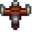
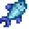

Plantilla:Mainmenu
Ir a la navegación
Ir a la búsqueda
Consulte la página de documentación en inglés para obtener más información sobre esta plantilla.
Uso
Esta plantilla se puede utilizar ingresando lo siguiente en una página relevante.
{{Mainmenu}}
Resultados en ...
| Básico | La Granja | Ambiente | Jugabilidad |
|---|---|---|---|
|
 Invernadero |
|||
| Objetos | |||
|
 Pescados |
|||
| El Valle | Más allá del Valle | ||